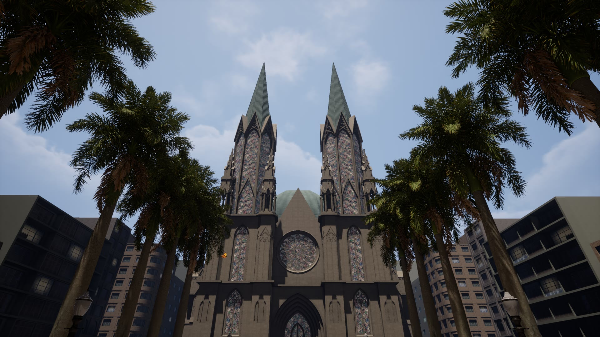
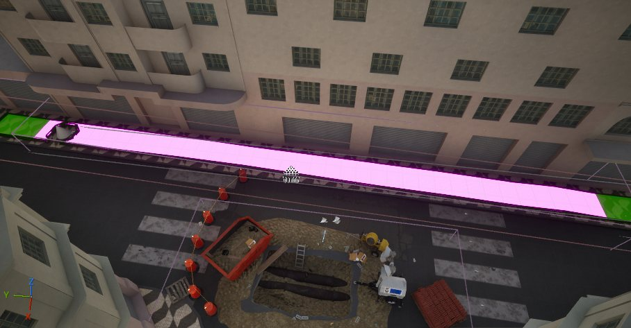
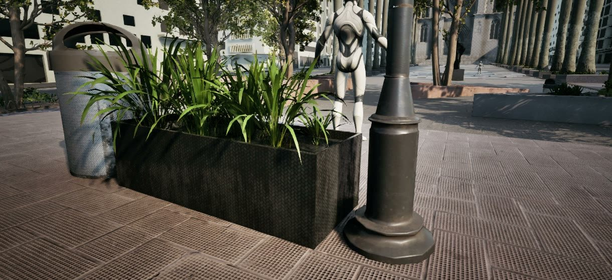
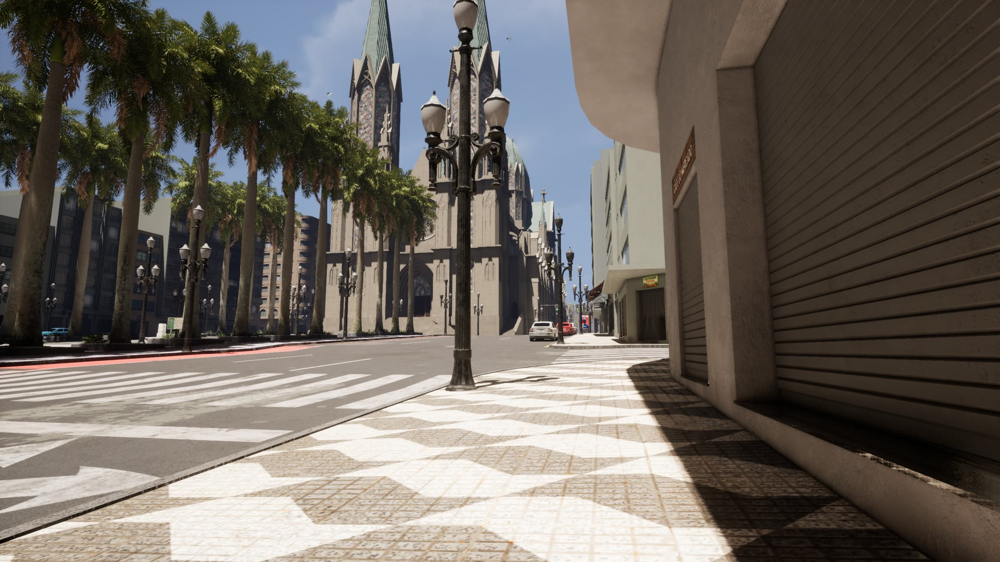
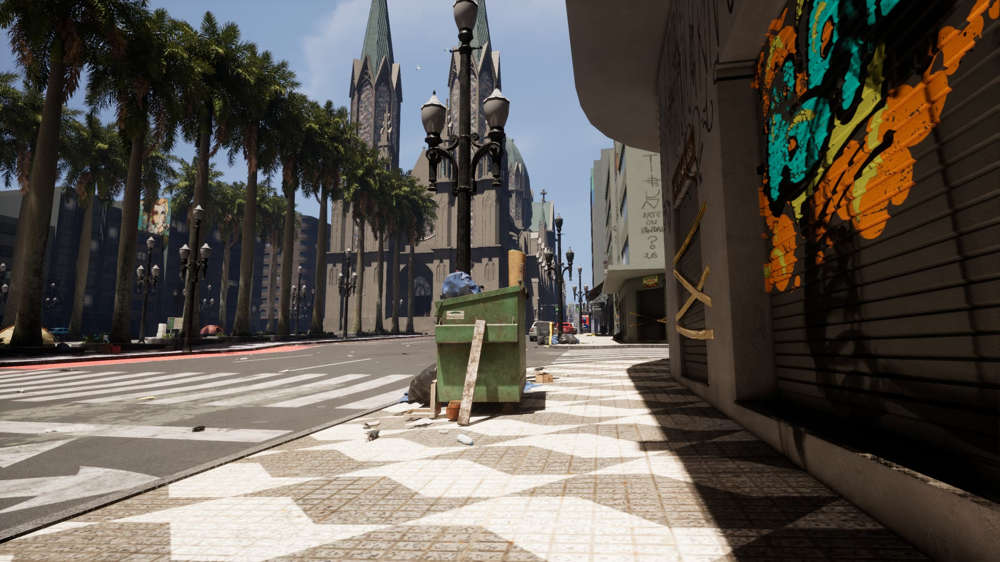
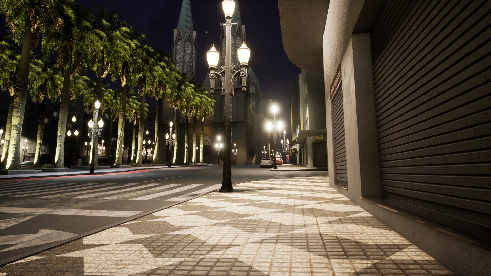
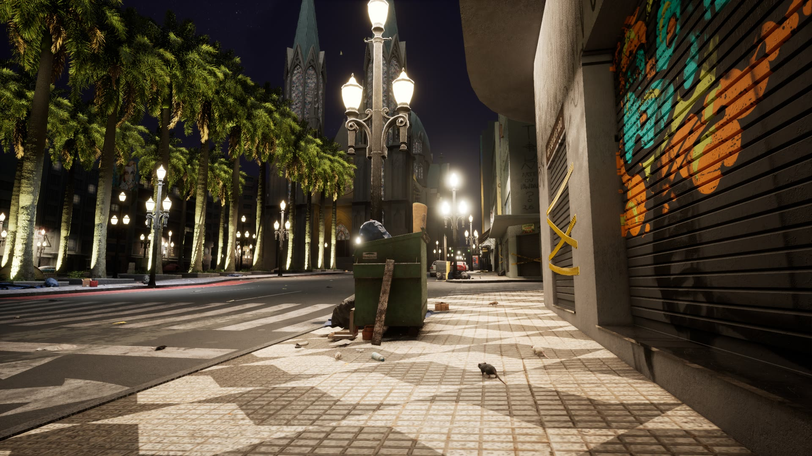
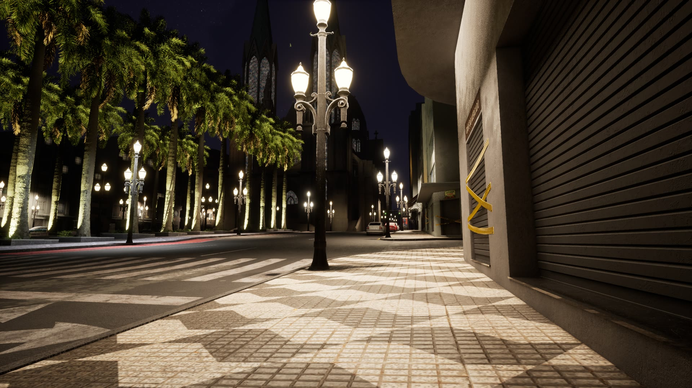
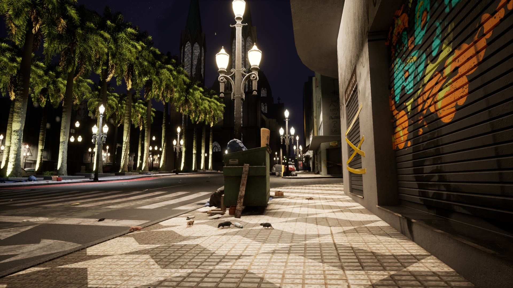
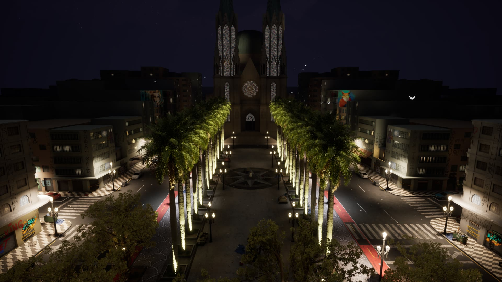

Uma experiência em realidade virtual feita para a pesquisa da Profa. Claudia Padovan, da Faculdade de Medicina de Ribeirão Preto (USP). O participante atravessa a mesma praça em seis estágios: de dia e de noite, limpa e suja, bem e mal iluminada.
Estágio 1 de 6 · Dia limpo
A praça como deveria ser.
Calçada varrida, muros limpos, postes apagados. É a linha de base para os outros cinco momentos.
Sol · Rua limpa · Postes apagados
Estágio 2 de 6 · Dia sujo
Mesma hora, outro cuidado.
Lixo acumulado, muros pichados, entulho na calçada. A luz do sol não muda. Só aparecem os sinais de abandono.
Sol · Lixo acumulado · Muros pichados
Estágio 3 de 6 · Noite limpa
A luz muda. A percepção vai junto.
Céu, névoa e exposição trocam de uma vez, e cada poste e janela acende. A praça continua limpa.
Noite · Rua limpa · Iluminação completa
Estágio 4 de 6 · Noite suja
O abandono no escuro.
O lixo e as pichações voltam, agora sob luz artificial. Ratos andam pelo lixo e fogem dos passos. Moscas zumbem por perto.
Noite · Lixo e pichação · Ratos e moscas
Estágio 5 de 6 · Noite, iluminação ruim, limpa
Quatro em cada dez lâmpadas queimadas.
As luzes caem para 35% da força, 40% apagam e algumas piscam com estalo elétrico. São sempre as mesmas, para que todo participante veja a mesma praça.
Noite · Luz fraca · Postes que piscam
Estágio 6 de 6 · Noite, iluminação ruim, suja
Tudo junto. Nenhum crime.
Escuro, sujo, pichado, com postes falhando. Nada acontece na cena. O que o participante sente vem só do ambiente.
Noite · Luz fraca · Lixo, pichação e abandono
Role para se afastar da Catedral
O projeto
Medo do crime não é a mesma coisa que crime.
O medo do crime afeta a saúde. Ele aparece ligado a alterações do sono e a quadros de pânico, ansiedade e depressão, mesmo em quem nunca foi vítima. Entender essa ligação é o objetivo do projeto “Abordagem translacional no estudo do medo do crime”, coordenado pela Profa. Claudia Maria Padovan na Faculdade de Medicina de Ribeirão Preto (USP), com apoio da FAPESP.
A sensação de insegurança nasce de sinais do ambiente: quanta luz existe, se a rua está cuidada, se há gente por perto. Na cidade real esses sinais mudam todos ao mesmo tempo, e não dá para isolar um deles. Em realidade virtual dá.
A UPVR desenvolveu para o estudo uma réplica navegável da Praça da Sé que passa por seis estágios. A cidade vai ficando suja, pichada e mal iluminada, um sinal de cada vez, enquanto sensores registram como o corpo do participante responde. É o mesmo percurso e as mesmas lâmpadas queimadas para cada pessoa.
6estágios, do dia limpo à noite suja e mal iluminada
3sinais combinados: período, sujeira e iluminação
4sinais do corpo registrados: pressão, coração, respiração e cortisol
5tipos de zona viva: som, ratos, insetos, luz com defeito e porta
Processo
Da referência ao laboratório
Cinco etapas, cada uma dependente da anterior. A praça precisava existir antes de poder ser alterada, e precisava ser alterável antes de ser apresentada.
01
A Praça da Sé, em escala real
Reconstruímos o coração de São Paulo com cuidado de cenógrafo: a fachada gótica da Catedral, o corredor de palmeiras imperiais, o piso em mosaico português e os prédios que cercam a praça. Quem conhece o lugar se reconhece nele.
Toda a cidade foi preparada para rodar leve e fluida dentro dos óculos, sem perder os detalhes que fazem o lugar parecer real.
Catedral da Sé
Palmeiras imperiais
Piso em mosaico
Prédios do entorno
Comércio e letreiros

Catedral da Sé, render do Unreal Engine 5.8
02
Uma praça, várias versões
Sobre a mesma cidade criamos as versões que a pesquisa precisa comparar: a praça limpa e cuidada, a praça com lixo e muros pichados, obras abertas na calçada, a iluminação noturna boa e a ruim.
O céu acompanha cada mudança. Nuvens, névoa e luz passam do dia para a noite de forma natural, para que a troca nunca pareça um corte de cena.
Rua limpa
Lixo acumulado
Grafite e pichação
Obras na calçada
Iluminação noturna
Céu de dia e de noite

Camada de obras: cones, vala aberta e entulho na via
03
Uma ferramenta feita para a pesquisa
Criamos uma ferramenta própria que coloca a experiência nas mãos do pesquisador. Com um clique, a praça muda de período, de limpeza e de iluminação, sem que o participante perceba como.
Cada versão fica guardada exatamente como foi definida. Assim, a centésima sessão mostra a mesma praça que a primeira, o que é essencial para comparar as reações das pessoas.
Dia e noitecéu, névoa e luz trocam juntos
Limpeza da rualixo, entulho e pichação entram e saem
Iluminaçãoforça das luzes e lâmpadas apagadas
Postes com defeitopiscando, falhando, morrendo
Sons do ambientebar, coral da igreja, água nos canos
Vida urbanaratos, moscas e mariposas
04
Um ambiente que reage
Zonas espalhadas pela praça dão vida aos sinais. O som de bar, o coral da igreja e a água nos canos crescem quando o participante chega perto e somem aos poucos quando ele se afasta. Ratos andam pelo lixo desviando das colisões. Mariposas circulam os postes acesos.
Cada zona pode valer só de noite, só de dia ou sempre.

Mobiliário urbano no nível dos olhos do participante
05
Andar pela praça
A praça é grande para caminhar só com o corpo. Com a mão apontada para a frente, o teleporte é livre. Levantando a mão, ele passa a andar em passos de 5 ou 10 metros, e o controle vibra a cada passo.
A imagem roda estável e fluida nos óculos. É isso que separa uma praça convincente de uma que causa enjoo.
Teleporte livre
Passos de 5 m
Passos de 10 m
Vibração a cada passo
Portas que abrem com a mão
Como apresentamos
Duas pessoas, a mesma praça
A experiência roda com dois papéis. Quem está dentro da praça não vê nenhum controle. Quem está fora vê tudo.
Dentro · óculos VR e sensores
O participante
Caminha pela praça em primeira pessoa. Ouve, olha, decide para onde ir. As mudanças acontecem no mundo ao redor dele, sem menus e sem telas de carregamento.
Fora · tela do PC
O pesquisador
Acompanha em tempo real o que o participante vê e o trajeto que ele faz. Avança os seis estágios pelo painel de ícones, com o mouse ou pelas teclas 1 a 6 do teclado numérico, e liga ou desliga sons durante a sessão.
PreparaçãoO pesquisador coloca os óculos e os sensores e testa se tudo está registrando.
Sala brancaO participante entra primeiro numa sala neutra, para se acostumar a estar em realidade virtual.
TutorialAprende a se mover, caminhando ou por teleporte, e começa quando se sentir pronto.
A praçaAtravessa a Praça da Sé enquanto o pesquisador conduz os seis estágios e acompanha o trajeto.
EncerramentoOs equipamentos são retirados e o participante responde aos questionários.






Visão do participante
Imagens reais de cada estágio, capturadas no Unreal Engine. Escolha o ponto de vista e clique nos ícones para trocar o estágio.
O que é medido
O corpo responde antes da palavra
A praça é o estímulo. O que a pesquisa observa é a reação de quem passa por ela, medida no corpo e em escalas psicológicas.
Durante a sessão
Sinais fisiológicos
Pressão arterial
Frequência cardíaca
Frequência respiratória
Antes e depois
Hormônio do estresse
Cortisol na saliva, coletado antes de entrar e depois de sair da praça
Depois da experiência
Questionários
Qualidade do sono (PSQI)
Depressão, ansiedade e estresse (DASS-21)
Cognição (MoCA)
Dificuldade de reconhecer emoções (TAS-20)
Crenças pessoais e medo do crime
Desenho do estudo conforme o projeto FAPESP 24/22996-5. A pesquisa também tem uma etapa com modelos animais, que não usa a realidade virtual.
A experiência
O que o participante sente
Nada na praça é ameaçador por si só. A experiência funciona porque soma sinais pequenos, cada um controlado.
Ver
A Catedral ao fundo, as palmeiras, os postes. Depois a mesma vista com metade da luz, poças escuras entre os postes e uma lâmpada que falha a cada poucos segundos.
Ouvir
Som em 3D vindo da direção de cada fonte. O bar fica mais alto ao passar na frente, a mosca zumbe perto do lixo, o poste estala quando apaga.
Andar
Liberdade para escolher o caminho: atravessar a praça pelo meio ou contornar pela calçada iluminada. A escolha também é dado.

A praça inteira no estágio 6: noite, iluminação ruim e sujeira. Cada poste pode ser apagado, enfraquecido ou posto para piscar.
Ficha técnica
Medo do Crime
Cliente
Faculdade de Medicina de Ribeirão Preto · Universidade de São Paulo